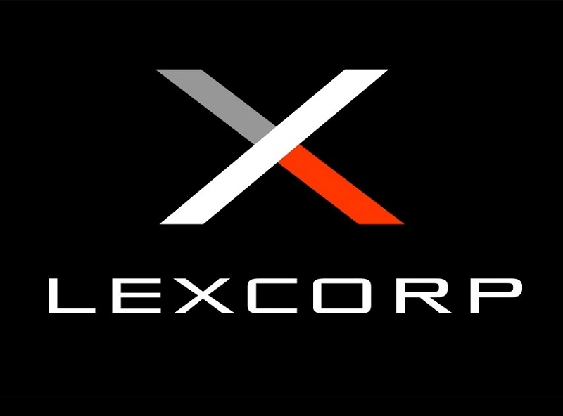

Wayne Enterprises

A Wayne Enterprises foi fundada no início do século XIX pela família Wayne em Gotham City, que começou como uma empresa imobiliária e de navegação transatlântica, posteriormente se ramificando em ferrovias e petróleo. Eventualmente, a empresa conseguiu se tornar um grande e poderoso conglomerado empresarial, estabelecendo sua sede na Wayne Tower, no centro empresarial da cidade.
Em 2015, a Wayne Enterprises havia se tornado a maior empresa de tecnologia do mundo, com a rival LexCorp em segundo lugar. Da mesma forma, junto com a LexCorp e a Indústrias Kord , a Wayne Enterprises tornou-se uma das três principais empresas de caridade dos Estados Unidos.
A Wayne Enterprises adquiriu a Van Criss Laboratories , que se tornou uma divisão da empresa focada no desenvolvimento e construção de nanorrobôs. A agência governamental ARGUS , sob a direção de Amanda Waller , contratou os Laboratórios Van Criss sem o conhecimento da Wayne Enterprises para o uso de seus Nano Explosivos na Força-Tarefa X.
Embora a empresa tenha rejeitado quaisquer contratos militares por insistência de Bruce Wayne, vários questionaram esta posição dados os 97 milhões de dólares gastos anualmente em investigação e desenvolvimento militar.
É uma das empresas mais antigas do mundo. Tudo começou como uma dúzia de negócios comerciais iniciados pelo juiz Solomon Wayne e seu irmão Joshua . Com o dinheiro ganho, o juiz Solomon Wayne construiu essencialmente Gotham City contratando Cyrus Pinkney.
O filho e herdeiro do juiz Solomon Wayne , Alan Wayne, usou a riqueza de seu pai e transformou as empresas Wayne Shipping e Wayne Chemical em Gotham City . A Wayne Manufacturing logo se tornou a quarta filial da empresa. Todas estas empresas foram energizadas e impulsionadas pela Revolução Industrial mundial e continuaram a mudar; mais filiais foram abertas e construídas enquanto outras diminuíram e foram descartadas. Ao longo dos anos, passou de uma casa comercial a um grande conglomerado multinacional que está entre os maiores do mundo, com apenas alguns rivais, como a LexCorp.
Wayne Enterprises tem muitas filiais. A empresa possui empresas de mineração, transporte marítimo, perfuração de petróleo e refinarias, alimentos e produções agrícolas e tecnologia agrícola em produção. Algumas das coisas mais significativas para o consumidor normal são os produtos eletrônicos de consumo, como sistemas Wi-Fi e computadores, e a Wayne Enterprises é uma das empresas líderes mundiais no desenvolvimento dessas tecnologias. É importante mencionar que quase todas as filiais fornecem informações, tecnologia e contatos para que Batman opere e mantenha suas investigações à frente das autoridades locais e agências federais.
Em 1981 , o CEO Thomas Wayne e sua esposa Martha perderam a vida em um assalto que deu errado. Seu único filho , Bruce , que testemunhou o crime, foi considerado o único herdeiro da fortuna da família Wayne e herdou a empresa dez anos depois. Mais tarde, a Wayne Enterprises se tornou uma das maiores empresas da Fortune 500 do mundo, bem como a empresa mais beneficente da América.
A família wayne negociava peles com os franceses. Com o tempo, seu império se expandiu para o setor imobiliário, petróleo e ferrovias.
Divisões
lista das subdivisões mais notáveis da Wayne Enterprises.
é o maior ramo individual sob a égide de empresas Wayne Enterprises. À medida que as invasões e o envolvimento alienígena se tornaram mais comuns, a WayneTech adquiriu tecnologia alienígena e a utilizou para pesquisa e desenvolvimento. Isto impulsionou os níveis de tecnologia e ciência da WayneTech para rivalizar com a LexCorp . Graças à Wayne Technologies, Batman tem acesso a qualquer tecnologia concebível de que possa precisar, incluindo superligas, nanotecnologia e biotecnologia.
é a principal empresa responsável pelo sistema de saúde de Gotham. A própria empresa é uma instalação para pesquisa e desenvolvimento de novos e melhores procedimentos e sistemas médicos. A empresa treina e ensina uma grande quantidade de pessoas anualmente. Tem um bom relacionamento de trabalho com a Gotham University e a Drake Medical.
é a filial responsável pelo desenvolvimento de alguns equipamentos do Batman para combate ao crime e vigilância, fazendo uso da tecnologia por eles desenvolvida na área de plásticos leves e duráveis.
A Química Wayne sempre foi boa no desenvolvimento de novos compostos e produtos químicos, mas sua ênfase foi transferida para pesquisa e desenvolvimento na década de 1980. Por causa dos campos de petróleo e refinarias que a Wayne Oil possui agora, ela também começou a fazer pesquisas em petroquímica ainda mais do que antes. Ao mesmo tempo, concentrou um enorme esforço em fontes alternativas de combustível. A Wayne Chemicals é a primeira empresa a criar um gerador de energia a partir de algas.
A Wayne Chemicals controla filiais da Wayne Enterprises como Wayne Oil, Wayne Pharmaceuticals e Wayne Botanical. A Wayne Oil dá ao Batman uma ligação direta com a OPEP e outras organizações e empresas petrolíferas. Wayne Pharmaceuticals é outra das grandes filiais de P&D da Química Wayne.
financia adequadamente a pesquisa científica e ajuda as pessoas com pesquisas, fornecendo instalações e treinamento. Se houver um avanço tecnológico, a WayneTech ou alguma outra subsidiária da Wayne Enterprises intervém para ajudar. O único custo desta assistência é que a Wayne Enterprises se reserva o direito de vetar a venda da patente ou permitir que a patente seja usada.
Filial que atua como braço beneficente da empresa.
é uma empresa de pesquisa e desenvolvimento para todos os setores industriais de máquinas pesadas a motores, sistemas pneumáticos e sistemas de grande escala. A empresa estuda, pesquisa e desenvolve usinas de energia mais limpas, de fissão mecânica e fusão.
A Indústrias Wayne possui muitas fábricas e unidades de trabalho normais, desde a fabricação de carros até a fabricação de tecidos e assim por diante. É um fato conhecido que as Indústrias Wayne têm várias fábricas em Gotham que na verdade não geram lucro, mas sempre que Bruce Wayne é questionado sobre elas, ele não parece se importar com elas. A Wayne Mining também faz parte da Indústrias Wayne, juntamente com as poucas usinas de energia que a empresa possui. A Wayne Mining produz principalmente ouro e algumas pedras preciosas na África. Eles são o ramo da Indústrias Wayne que obtém o segundo maior lucro, depois do braço de pesquisa e desenvolvimento.
é um grande consórcio que fabrica quase tudo, desde rádios portáteis a sistemas estéreo e Wi-Fi, câmeras de cinema, câmeras e eletrônicos, dispositivos de medição, scanners, equipamentos de vigilância, computadores e outros dispositivos eletrônicos. Wayne Electronics é uma das marcas mais vendidas em eletrônicos, desde multimídia até sistemas de precisão. Seus outros ramos de negócios incluem tecnologia da informação, redes com fio, redes sem fio e sistemas de exploração espacial e satélites.
Historicamente, a empresa, sob a insistência de seu CEO Bruce Wayne, havia recusado qualquer contrato militar. No entanto, vários questionaram essa posição, dados os US$ 97.000.000 milhões gastos anualmente em desenvolvimento militar pela Wayne Enterprises.
LexCorp
A LexCorp começou no ramo petroquímico e de máquinas pesadas após ser fundada pelo imigrante alemão Alexander Luthor Sr. na década de 1960 na cidade de Metropólis, Delaware. Luthor realizou esse feito através de pura determinação e ferocidade, tendo como lema "o ataque ganha jogos", ganhando assim uma imensa fortuna e tornando-se um milionário da pobreza à riqueza.
Dirigido por Alexander Luthor Sr.
Embora o próprio Luthor Sr. afirmasse em documentos de investidores ter nomeado a LexCorp em homenagem a seu filho Alexander Luthor Jr., a empresa começou a se chamar LexCorp por volta de 1974, dez anos antes de seu filho nascer. À medida que o negócio se expandia, novos e jovens investidores o apresentavam como um pai adorador que estava construindo um legado para seu filho. No entanto, em 2000, Luthor Sr. faleceu inesperadamente, deixando a LexCorp para seu filho pequeno, que viria a ser um mentor e um empresário super-genial.
Dirigido por Alexander Luthor Jr.
Crescimento & desenvolvimento tecnológico
Sob sua liderança, Alexander Luthor Jr. transformou com sucesso a LexCorp de uma antiga empresa petroquímica e de máquinas pesadas em uma gigante de tecnologia de ponta da Fortune 500 e expandiu muito a riqueza herdada de seu pai, o que o tornou indiscutivelmente o homem mais rico do mundo. A LexCorp superou de longe empresas como Wayne Enterprises, Indústrias Kord, Indústrias Stagg, Indústrias Queen e Geschäft-Krieg em termos de orçamento de P+D e no campo de contratos de defesa militar, tornando a LexCorp a primeira empresa de inovação de defesa de alta tecnologia do mundo.
Reconstrução da Metropólis
Após a devastação de Metropolis, a LexCorp apoiou financeiramente os esforços de reconstrução da cidade em parte graças aos esforços filantrópicos de Alexander Luthor, tornando-se uma das poucas empresas a permanecer em Metropolis depois que uma onda de negócios deixou a cidade. Inspiradas pela filantropia de Luthor, várias empresas da cidade, como a Kord Industries, optaram por permanecer ou reverter suas retiradas. Mais tarde, a LexCorp criou representações artísticas dos navios kryptonianos que foram mostradas em um documentário feito sobre o tema da tecnologia kryptoniana.
Em 2014, depois que a jornalista Lois Lane, do Daily Planet, revelou o tráfico ilegal de armas kryptonianas em nome do CEO Mark Hanford, a LexCorp adquiriu sua empresa Hanford Technologies e todos os seus ativos. Em sua declaração, Alexander Luthor citou que os funcionários não devem sofrer as ações imorais de seus ex-CEOs.
A LexCorp também estava de olho na Divisão de Ciências Aplicadas da Wayne Enterprises, com Luthor também solicitando que ela comprasse a divisão por US$ 1.000.000.000, embora ele tenha recebido repetidamente a recusa implícita do proprietário da Wayne Enterprises, Bruce Wayne.
Indústrias Kord

Fundação
Em 1985, a Indústrias Kord foi fundada pelo empresário Thomas Kord, tornando-se uma força líder na indústria de tecnologia de defesa.
Investimentos em Metrópoles
Em 2013, a Indústrias Kord se comprometeu a expandir os investimentos dentro da Metropolis após os eventos devastadores da Batalha da Metrópole e os planos de reconstrução apresentados por Alexander Luthor. Em 2015, o orçamento de pesquisa e desenvolvimento da Indústrias Kord havia atingido US$ 707.000.000, mas na época, eles estavam enfrentando forte concorrência no campo da LexCorp. Os produtos da Indústrias Kord tornaram-se uma das muitas marcas populares vendidas na Avenue of Tomorrow em Metropolis.
Geschäft-Krieg
É uma empresa multimilionária de pesquisa e desenvolvimento. Anteriormente sendo o maior fabricante de lâmpadas da Europa, eles se voltaram para a fabricação de armas pesadas, estabelecendo-se em Metropolis, nos EUA.
História
Começou fabricando lâmpadas, a maior empresa da Europa a fazê-lo, Geschäft-Krieg eventualmente se voltou para a fabricação de armas pesadas. Ao adquirir a Sheridan Dynamics, com sede nos Estados Unidos, a empresa estava gastando cerca de US$ 171.000.000 milhões em pesquisa e desenvolvimento militar.
Sheridan Dynamics é uma empresa com sede nos Estados Unidos de propriedade do fabricante de armas pesadas Geschäft Krieg.
A Sheridan Dynamics foi adquirida pela empresa europeia Geschäft Krieg.